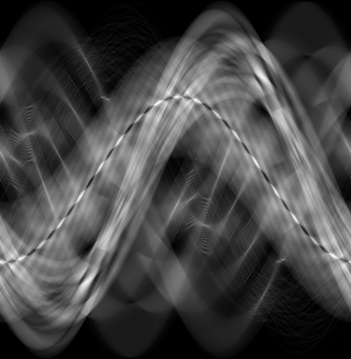
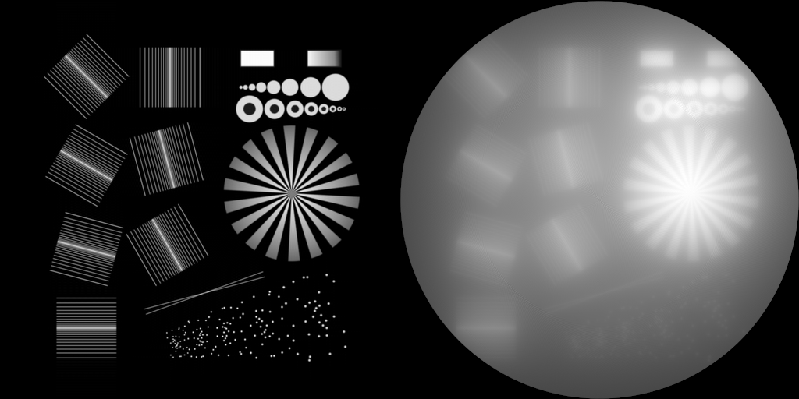
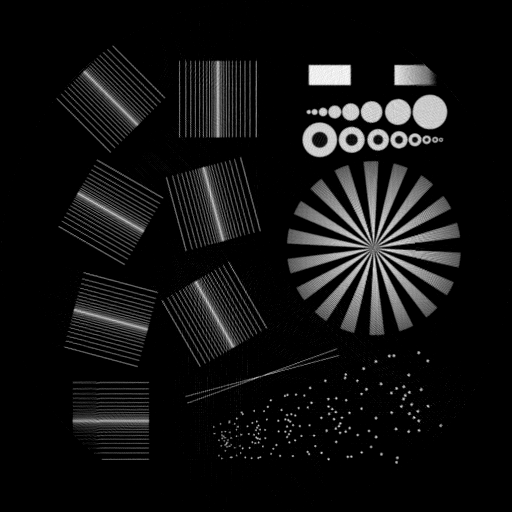

Tutorial
We offer some examples on GitHub. To run them, git clone the whole repository. Then do:
(@v1.9) pkg> activate examples/
Activating project at `~/.julia/dev/RadonKA.jl/examples`
julia> using Pluto; Pluto.run()Radon transform
The radon transform only requires the image (or volume) and some angles:
using RadonKA, ImageShow, ImageIO, TestImages
img = Float32.(testimage("resolution_test_512"))
angles = range(0f0, 2f0π, 500)[begin:end-1]
# 0.196049 seconds (145 allocations: 1009.938 KiB)
@time sinogram = radon(img, angles);
inverse Radon (iradon) transform
# 0.268649 seconds (147 allocations: 1.015 MiB)
@time backproject = RadonKA.iradon(sinogram, angles);
# in Pluto or Jupyter
simshow(sinogram)
[simshow(img) simshow(backproject)]Left is the original sample and right the simple backprojection. 
Filtered Backprojection
In the absence of noise, the filtered backprojection works well:
# 0.252915 seconds (171 allocations: 13.664 MiB)
@time filtered_backproject = RadonKA.filtered_backprojection(sinogram, angles);
CUDA Support
RadonKA.jl supports CUDA and usually provides a 10-20x speedup on typical RTX 3xxx or 4xxx GPUs. Pay attention that the element type of the array/img should be Float32 for good speedup. In my case we used a AMD Ryzen 5 5600X 6-Core Processor and a CUDA RTX 3060 Super.
using CUDA
img_c = CuArray(img);
angles_c = CuArray(angles);
# 0.005611 seconds (8.95 k CPU allocations: 363.828 KiB) (2 GPU allocations: 998.047 KiB, 0.26% memmgmt time)
CUDA.@time CUDA.@sync sinogram_c = radon(img_c, angles_c);3D example
Simply attach a third trailing dimension to the array. The radon transform is computed along the first and second dimension. The third dimension is just a batch dimension.
volume = randn(Float32,(512, 512, 512));
volume_c = CuArray(randn(Float32,(512, 512, 512)));
# 86.795338 seconds (153 allocations: 498.039 MiB, 0.02% gc time)
@time radon(volume, angles);
# 2.527153 seconds (8.95 k CPU allocations: 363.703 KiB) (2 GPU allocations: 498.027 MiB, 0.06% memmgmt time)
CUDA.@time CUDA.@sync radon(volume_c, angles_c);